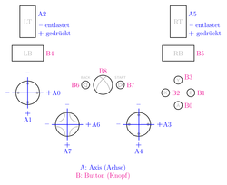

XBox-Controller
Dieser Artikel wurde für die folgenden Ubuntu-Versionen getestet:
Dieser Artikel ist größtenteils für alle Ubuntu-Versionen gültig.
Zum Verständnis dieses Artikels sind folgende Seiten hilfreich:
So Mancher hat vielleicht schon einmal einen XBox-Controller unter Windows verwendet. Mit Hilfe eines Adapters ist der Anschluss an den USB-Port möglich, ob gekauft oder selbst gebaut. Dieser Artikel befasst sich mit der Installation und Einrichtung des XBox-Controllers und der Verwendung als zusätzliche Maus.
Installation¶
Erkennung¶
Als erstes sollte überprüft werden, ob der Controller überhaupt erkannt wurde. Dazu gibt man in ein Terminal ein [1]:
lsusb
Es müssten nun zwei Geräte erscheinen, eines für den Controller und der andere Eintrag für das Hub (welches für die Speicherkarten zuständig ist):
Bus 002 Device 003: ID 045e:0202 Microsoft Corp. Bus 002 Device 002: ID 045e:001c Microsoft Corp.
Laden wichtiger Kernelmodule¶
Es gibt bereits Kernelmodule für die Verwendung des Xbox-Controllers, was einem die Arbeit regelrecht erleichtert. Um den Controller verwenden zu können, muss man einfach die Module joydev und xpad in den Kernel laden [3]:
sudo modprobe joydev sudo modprobe xpad
Dies geschieht bei aktuellen Ubuntu Versionen automatisch. Um diese beim Systemstart zu laden, kann man diese in die /etc/modules eintragen [3].
Gerätebezeichnung¶
Wenn der Controller angesteckt wird, blinkt zunächst eines der grünen Lichter im Kreis um den X-Button. Wenn es auf dauerhaft leuchtet, wurde der Controller erkannt und eingebunden. Er steht dann dem System unter dem Gerätenamen /dev/input/js0 zur Verfügung. Hat man mehrere Controller bzw. Joysticks angesteckt, wird entsprechend js1, js2 usw. vergeben.
Konfiguration¶
Technisches¶
|  |
| Belegungsschema des XBox-Contollers |
Der XBox-Controller hat verschiedene Bedienelemente, die dem Computer bekannt gemacht werden müssen. Dabei werden Axes (Achsen) und Buttons (Knöpfe) unterschieden. Die Analog-Hebel sind zum Beispiel Achsen, die A,B,X,Y-Tasten hingegen Knöpfe.
Bei Achsen wird die Auslenkung des Bedienelements aus der Ruhestellung in Zahlenwerte umgesetzt, die an den Computer übertragen werden. Je weiter das Bedienelement aus der Ruhelage ausgelenkt wird, desto (betragsmäßig) größer der übertragene Zahlenwert. Knöpfe sind hingegen alle Bedienelemente, bei denen nur die Zustände 0 und 1 für nicht gedrückt und gedrückt übertragen werden.
Die Analog-Hebel auf dem XBox-Controller haben zwei Achsen, aber auch die Gashebel an der Rückseite sind als jeweils eine Achse ausgelegt. Auch der Vierfach-Richtungsknopf vorne links wird dem Computer als System von zwei Achsen bekanntgemacht, obwohl die vier Richtungen lediglich wie Knöpfe funktionieren.
Einen Überblick über die Zuordnung der Bedienelemente zeigt die nebenstehende Grafik. Bewegt man zum Beispiel den rechten vorderen Analog-Hebel nach links, so wird dem Computer übermittelt, dass auf Achse 3 immer negativer werdende Zahlenwerte angenommen werden. Bewegt man den Analog-Hebel nach unten, so nimmt Achse 4 immer positiver werdende Zahlenwerte an.
Man kann sich die übermittelten Zahlenwerte mit Hilfe des Kommandozeilenbefehls
jstest --normal /dev/input/js0
anzeigen lassen. Bei mehreren Controllern bzw. Joysticks muss man entsprechend js1, js2 usw. verwenden.
Die Zahlenwerte, zwischen denen die Achsen in ihren Endpositionen sich bewegen, liegen jeweils zwischen -32767 und +32767. In der Ruheposition sollten die Werte idealerweise bei 0 liegen. Tatsächlich führt die feine Unterteilung (etwa 65.000 mögliche Werte auf knapp zwei Zentimetern Wegstrecke) dazu, dass schon ein unsanftes Bewegen des Controllers in den Achsen zu Verschiebungen führt, die als von Null abbeichender Zahlenwert übermittelt werden.
Automatische Kalibrierung¶
| Achsen und Buttons in Kcontrol[2] |
Die Konfiguration läuft wie bei einem normalen Joystick ab. Jedoch gibt es relativ viel zu konfigurieren, da fast alle Tasten druckempfindlich sind.
Achsen¶
Als erstes werden die Achsen kalibriert. Das System muss wissen, welcher Zahlenwert zu welcher Position welcher Achse gehört. Man wird daher nacheinander aufgefordert, die jeweilige Achse in ihre minimale, neutrale und maximale Position zu bringen und das dann zu bestätigen. Die Achsen sind dabei durchnummeriert, die Nummern können dem Belegungsschema weiter oben entnommen werden.
Wird man also aufgefordert, die Achse 3 in ihre minimale Position zu bringen, so bewegt man den rechten vorderen Analog-Hebel ganz nach links und bestätigt; der übertragene Zahlenwert sollte dann nahe bei -32767 liegen. In der anschließend abgefragten Neutralposition sollte der Zahlenwert nahe bei Null liegen. Dann muss man den Analog-Hebel noch ganz nach rechts bewegen und bestägigen, so dass der Zahlenwert dann nahe bei +32767 liegt.
Diese Prozedur wird für alle Achsen wiederholt, beginnend bei Achse 0, endend bei Achse 7.
Die Achsen 2 und 5, die den beiden Gashebeln (engl. "throttle", auf den Tasten steht LT und RT für "left throttle" und "right throttle") zugeordnet sind, muss man erst nicht gedrückt, dann halb gerückt und dann voll gedrückt halten, was minimaler, neutraler und maximaler Position entspricht.
Die Achsen 6 und 7 gehören zum Steuerkreuz vorne links auf dem Controller. Es wird zwar wie eine Achse behandelt, funktioniert aber wie eine Taste; entsprechend werden nur die Zahlenwerte -32767, 0 und +32767 übermittelt. Die Kalibrierung erfolgt wie bei den anderen Achsen.
Knöpfe¶
Nach den Achsen sind die Knöpfe dran. Man wird lediglich aufgefordert, die Knöpfe in aufsteigender Reihenfolge, beginnend bei 0, zu betätigen. Die Belegung kann dem oben gezeigten Schema entnommen werden.
Deinstallation¶
Falls man den Controller nicht mehr verwenden will, sollten die Module aus der /etc/modules entfernt werden.
Experten-Info:
Erstellte udev-Regeln können entfernt werden.
Nutzung¶
QJoyPad kann Tastatur- oder Mauseingaben mit Hilfe eines Joysticks oder Gamepads simulieren
Mit dem Programm joy2key kann man den Bedienelementen des X-Box-Controllers Tasten der Tastatur zuordnen und so zum Beispiel auch Spiele steuern, die mittels Tastatur bedient werden.
Das Programm js2mouse erlaubt es, den XBox-controller anstelle einer Maus zu verwenden.
Problembehebung¶
Ein Nachbau des Xbox Controller S meldet sich mit der USB ID ffff:ffff:
Bus 005 Device 003: ID ffff:ffff Bus 005 Device 002: ID 1345:001c Sino Lite Technology Corp. Xbox Controller Hub
Dies führt zu einem Konflikt, da sich bereits das Modul lirc_atiusb um diese ID kümmert und dadurch unter Umständen das Laden des xpad Treibers verhindert. Um dies zu unterbinden, fügt man die Zeile
# conflicts with xpad blacklist lirc_atiusb
in der Datei /etc/modprobe.d/blacklist.conf hinzu. Dazu wird die Konfigurationsdatei mit einem Editor mit Root-Rechten bearbeitet.
 Übersichtsartikel
Übersichtsartikel- Erstellt mit Inyoka
-
 2004 – 2017 ubuntuusers.de • Einige Rechte vorbehalten
2004 – 2017 ubuntuusers.de • Einige Rechte vorbehalten
Lizenz • Kontakt • Datenschutz • Impressum • Serverstatus -
Serverhousing gespendet von